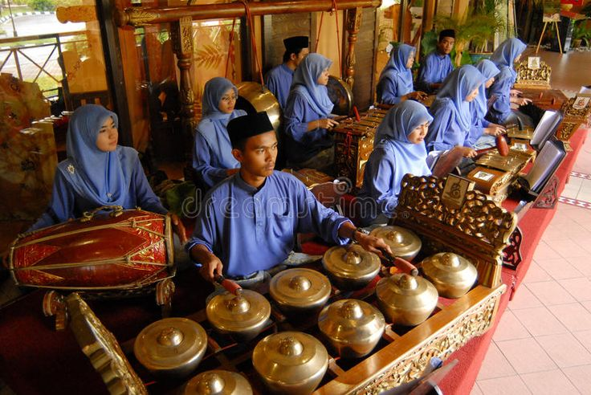

KARAWITAN SUNDA
Karawitan sunda sudah dikenl cukup lama sebagai
seni musik tradisional yang tempat asal dan berkembangnya berada di daerah Sunda. Musik karawitan Sunda
memiliki cii-ciri tertentu yang di pengaruhi oleh berbagai aspek dari masyarakat Sunda.
Sebenarnya, karawitan adalah istilah lain untuk menyebut musik tradisional. Mengutip dari buku berjudul
seni budaya yang ditulis Zackaria soetedja dkk. musik tradisional merupakan musik yang hidup dan
berkembang secara turun temurun di suatu daerah tertentu
sumber:m.kumparan.com
ini adalah contohnya:
|  |
sumber:pinterest